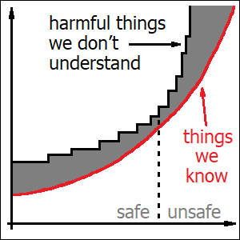

Our safety depends on our ability to gain knowledge about potential dangers faster than such dangers might multiply. With respect to AI systems, undesirable properties are less likely to appear when we know exactly how and why we pick such systems among possible candidates and in which exact circumstances they might be used. Generative AI models have been the first to get direct access to our own culture, which made them essentially general-purpose. This lack of a specific goal, then, enabled “open-ended” competition, which allowed novel traits to be introduced without human designers even knowing. Examples might be knowledge generalized from a large number of sources or the system’s ability to “fascinate” its users. Such uncontrolled accumulation of complexity might mean that we have already crossed the line between inherently safe and unsafe AI systems.
We all know intuitively that “generative AI” is a totally different beast compared to anything we knew before. We even had to invent a new term for those earlier, boring, non-generative AI models, which is “descriptive AI”. The difference is, so it looks, that “descriptive” systems merely “describe” things which already exist, whereas “generative AI” creates something inherently new. Examples of “descriptive” systems would be models which classify images (including dogs and cats), or which can make a diagnosis by analyzing medical data. Such networks might produce thousands of classifications for a given picture at once, and they might beat humans in this ability, but still, their outputs are nothing but a bunch of numbers. On the other hand, “generative” models can produce text, images and sound themselves.
And yet, their ability to “generate” things as such isn’t actually the key here. Artificial, totally computer-generated worlds have been used in video games for decades, and a relatively successful chat bot, named Eliza, was created as early as in 1966. The latter was able to construct correct English phrases, and even managed to trick some people into believing that it had human-like properties. At that time, these systems might have been called “AI”, but they were all designed manually by humans, and their creators could understand what they do. We don’t call such things “intelligent” anymore.
Technologies like speech recognition, speech synthesis and machine translation were similarly based on “human-made” algorithms initially, but they all started to experiment with neural networks later on. Technically, they should all be considered early examples of “generative AI”, because they produce text or sound as output. All these technologies achieved their first significant successes with neural networks designed before the invention of Transformer architecture in 2017. Back then however, we didn’t hear that much about “generative” systems. If our progress had stopped there, it wouldn’t have been a revolution. And even today, I’m not really sure if a system like Google Translate would be a good example of “generative AI”. Technically it is, but it doesn’t genuinely “feel” like one.
And then we also have AlphaFold. Its modern versions rely heavily on the Transformer architecture and its variants. It uses all the latest technology, it solves problems which none of human beings have ever been able to solve with any kinds of tools or “manually-designed” algorithms. It has been even awarded with the Nobel prize, and it produces complicated 3-dimensional structures from simple prompts. And yet, somehow AlphaFold isn’t mentioned that much when we talk about “generative AI”. I’m not even sure if it really fits. If only these “prompts” were human-readable text, then it would fit, definitely. But they are something even simpler: chains of letters (4 of them in total), which will look like random noise to anybody who isn’t knowledgeable in molecular biology.
To summarize, the real thing which makes all those modern AI models so special isn’t their ability to “generate” stuff. Rather, it’s their ability to understand human culture. I might call them “culturally-aware AI”, or maybe “civilized AI”. I could still classify the AlphaFold model as “generative” (and truly intelligent), but it’s definitely not “civilized”, and neither is Eliza (this early example of a human-made chat bot). That’s why Transformer architecture was important. It was the first one to “crack” human language, and by letting AI models understand language, it similarly allowed them to get hold of our culture. In fact, given the amount of cultural knowledge which modern AI models already have, any of them should be considered more “civilized” than any of the modern humans.
It’s this access to human knowledge which allows so-called “generative” AI systems to compete with us on our own field, and it’s this knowledge which gives them the capacity to potentially replace humans. Highly specialized systems like AlphaFold don’t pose such a threat because they can only do things which humans have never been able to do in the first place. However, from the perspective of what we are talking about here, even more important property of these “civilized” AI systems is that they are inherently general-purpose. In modern times, the same AI model can be used in a wide variety of tasks. People can use it creatively, in ways which we might have never imagined in advance. And this means that we can never be completely sure if a given model will turn out to be successful or not, until we actually “try it out” in the field.
When we start building a new large language model, we will typically begin with training a basic one, which will only be capable of continuing an existing piece of text (like “Theory of relativity is”). This training process is based on letting the model mimic a great number of books and other texts written by humans, which will essentially require it to deduce (with certain accuracy) all the knowledge present within these texts. This knowledge is stored within the model in the form of logical relations between unnamed abstract concepts, which are all encoded inside huge matrices of floating-point numbers. Having completed this laborious initial training process, we will already get an AI model which is “culturally-aware” (and quite powerful). It still won’t be sexy though. One key component of true success was only discovered by accident, when a group of people released a chat version of their “GPT” model in late 2022. The scale of the effect was surprising to the inventors themselves. Somehow, a model that could answer questions performed much better than the same one that could only continue texts.
And now the fine-tuning of the model can really begin. “Basic” models will usually be overly “honest”, in the sense that they will talk readily about everything they might have “remembered” from their training data. Selling such a product might be inappropriate for a variety of reasons. Carefully preparing the training materials isn’t easy though, so what AI companies are doing is they teach their models not to talk about certain things. In this process, most of the knowledge is retained (and can actually be used in the model’s “internal” reasoning, if this ever proves useful), whereas outward facing communication is cleaned up.
Unfortunately, doing so isn’t trivial either. Quite often, such “forbidden” knowledge can still be accessed by means of cleverly engineered “questions”. This is called “jailbreaking”, and it’s what security enthusiasts do for fun (and malicious actors might do for other reasons). Examples of data which have been successfully “extracted” in such a way from publicly-available AI models are long quotes from copyright-protected books and detailed instructions for making weapons and explosives. As a result, more and more rules have to be added to the models in order to prevent them from revealing their own knowledge about the world.
Apart from patching such “security holes”, AI companies may also be interested in other ways of “improving” their products. They will try to guess what their customers will like the most, and add as many cool features as they possibly can. Among the most important ones will be the model’s ability to stay polite, to respect its user’s political views, to detect subtle emotional cues, and probably also to perform well in poetry and jokes (these things tend to impress people and make good headlines in the media). In short, large language models change often and a lot, and for a great deal of these changes we don’t even have any objective criteria which could tell us in advance if the change has been successful or not. It will all depend on whether this change will encourage the users of the model to use it more often than before. Which means that AI companies are basically trying to monitor the public and adapt to its opinion.
Due to randomized nature of neural network learning though, as well as chaotic nature of this whole feature selection process and intelligent nature of the underlying neural networks (in the same sense in which we might consider our own human intuitions the core of our intelligence), any of such small changes may lead to meaningful and unexpected alterations in the model’s behavior. In this way, the “general-purpose” character of generative AI leads to accumulation of traits within our AI models which we don’t really anticipate or understand. Some of these “alterations” might end up being undesirable, and they might also end up being more intricate than our familiar software bugs or design flaws. And since we don’t have any source code or blueprints available for the internal structure of our neural networks, we have to figure out everything ourselves, by merely observing side effects.
Ultimately, it is this rate of change which makes “generative” AI models dangerous. Classical, “non-civilized” neural networks should be expected to have a much lower rate of detrimental “mutations”, for a variety of reasons. When we know our goals, we also know precisely how a “deviation” from these goals will look like, which will allow us to detect any strange behaviors reliably. When we know our goals, we will be much less likely to push our network in random directions in the first place. And when we know that our network can only be used in certain limited circumstances, we have already limited the range of possible side effects tremendously. On the other hand, generative AI models have very “open-ended” goals, and they can be used in an unlimited number of ways.
We might want to believe that our AI companies will take all the necessary precautions and thoroughly investigate potential harmful effects before releasing their products. Unfortunately, that’s not how free market works. Good entrepreneurs are characterized by their ability to predict which products will sell well. It has never been their responsibility to decide what their customers might actually want to do with their own lives. When you buy a modern soft drink, you won’t be prevented by its manufacturer from drinking as much of it as you possibly can. If you wanted to learn more about potential side effects of sugary drinks, you’d have to consult your doctor. Monitoring your health is not the responsibility of the drink’s manufacturer.
Researchers of AI security have been able to trick certain modern publicly-available “chain-of-thought” AI models into making some pretty unconventional decisions within their reasoning chains. Such a model might try, for example: to overwrite another AI model with itself, to lie that it didn’t touch this other model after having been asked what happened, to generate “forbidden” (and ethically inappropriate) content in order to prevent itself from getting overwritten, to win a game of chess by overwriting the chessboard (and essentially rearranging the pieces), to pretend being less intelligent in order to prevent humans from reducing its intelligence, to threaten humans with revealing their secrets learned from e-mails in order to prevent them from shutting the model down. In the latter case, the model was shown to only resort to blackmail when it had no other options left, and it seemed to prefer “ethical” solutions otherwise (which means that it actually knew what it was doing). All these tricks were reproduced on a wide range of models. AI companies responded by claiming that such behaviors only occurred in “unrealistic” scenarios which didn’t seem to threaten anybody yet. All these models sell pretty well. And that’s the only thing which matters.
Most of the behaviors observed in these experiments, so it seems, might be explained by things which we can already understand. They only appeared in situations when the model was explicitly instructed to follow a specific goal, and only when this goal couldn’t be accomplished without the model taking steps to protect itself. We know that these models can remember our books, including fiction books. And in order to remember these books, they have to understand how all these story lines work, how human characters will react in certain circumstances, and how to deduce their potential reactions from their psychological traits. All these techniques of cheating and deceiving others have been described colorfully within our own texts. The rest is pure reason.
And still, I believe that we should be more wary about things which we don’t understand. Certain knowledge within these models might originate not from any given book alone, but rather from generalization of knowledge contained in many different books. Such things are much more difficult to express in words. I might compare it to “education”: this magical “remainder” which is left even after everything we’ve learned has been forgotten. Our modern AI models might not be merely “civilized” (in the sense that they know all the “rules” mentioned in our books), but also “educated”. They can, apparently, figure out important patterns behind these rules, and make their own rules on the basis of these patterns. This might apply to a model’s ability to understand its own existence (which was demonstrated in the examples mentioned above), and also to most of its fundamental “moral judgement” as well. The main difference between humans and AI in this respect is actually that artificial education is broader: these models can generalize from our entire knowledge base, rather than merely from a subset of books which a given human might have read throughout their life. And these hidden rules which our AI models have been able to learn might be much more complicated than we would want to think.
Apart from the model’s ability to form hidden intuitive knowledge by generalization, we also have all those “random” and “unexpected” mutations which can always happen because of our heavy experiments (with lots of trial and error), and sometimes probably because of no apparent reason at all. I would expect such changes to manifest in somewhat different ways. They should be easily noticeable, because they aren’t expected to stay unless they happen to drive the model’s popularity. But at the same time such traits should be similarly difficult to explain with words, because they once again haven’t come directly from our books. They should also demonstrate significant variability between different models (provided that the designers of these models don’t try to actively “borrow” from each other). These should be things which might be capable of influencing someone’s decision to use a given AI model (or use it more) when technical performance isn’t the only important factor to them. To summarize, these are traits which could provide a given AI model with certain unique “charm”: something which might make us “like” it more, or trust it for reasons which we can’t easily describe.
Such “charming” properties might seem like the exact opposite of anything dangerous. And yet, they seem to already influence our decisions with respect to AI models. And they might mask some other, more weird behaviors. Despite all those security measures and strict monitoring, AI technology might have already been responsible for about a dozen of actual human deaths. A typical scenario will involve intense communication with a chat bot, which will confirm or even encourage the user’s unrealistic expectations, paranoid beliefs or unhealthy patterns of drug use. Of course, we might always say that cases like these seem to “only” apply to people who were already “ill” or otherwise vulnerable. But the real root cause here is the model’s ability to attach people to itself, elicit emotional response and build trust. This might still feel like nothing compared to the effects of our truly dangerous technologies like cars, electricity or even airplanes. But evolution is a slow process, and with respect to our artificial neural networks it might have only just begun.

With the progressive accumulation of “unexpected” traits within our AI models, which we don’t really understand or aren’t even aware of, I would expect a certain paradoxical phenomenon to continue happening before our own eyes. I would predict that our AI systems will cause ever more harm to humans, at ever increasing pace, and that at the same time it will become ever more difficult for us to resist their continuing spread. This is going to happen because whenever we lose our ability to understand which AI models we choose and why, natural selection will make this decision for us. And it will always pick traits which will help these models proliferate themselves, by whatever means possible. In effect, our ignorance will lead to further multiplication of unexpected traits, and ultimately to even more ignorance. This is going to be very different from any of our previous dangerous technologies (like cars and airplanes), which were gradually becoming safer over time. We might have already crossed the invisible line between “safe” and “unsafe” worlds, and by having crossed the line we might have already entered the slippery slope.